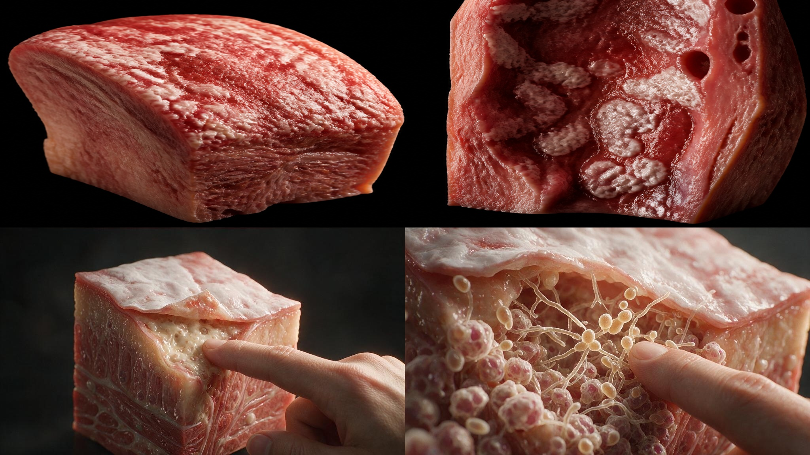
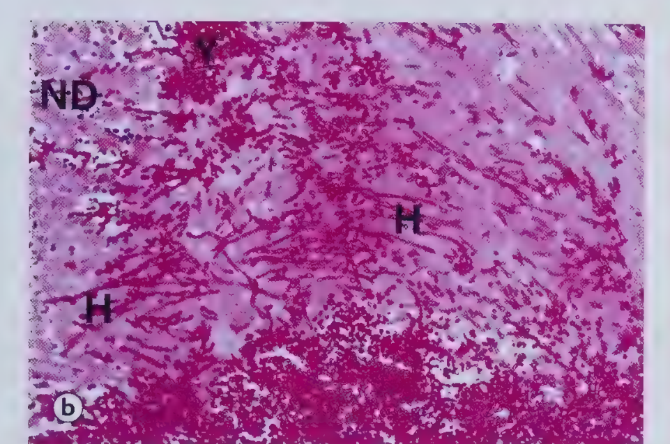
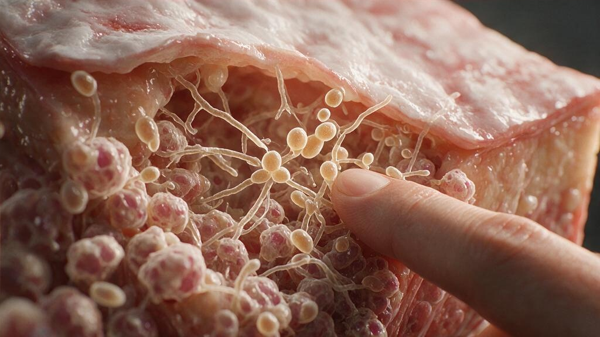

Candida albicans, a normal commensal on skin, mouth and genital mucosa, overgrows once systemic antibiotics wipe out competing bacterial flora. Establishing progression from oral thrush down into the oropharynx, then into the neutrophil-rich acute pattern and the hyphae/yeast forms themselves.
Fig. 4.15
